DEEP LEARNING RESEARCH
Multimodal vision systems
Multimodal Parallel Fusion Transformers, CoAtNet, CoaT, contrastive learning, attention interpretation, and model evaluation workflows.
SYSTEM INITIALIZED // GRADUATE PORTFOLIO
About meInformatics Engineering Graduate | Deep Learning Research & Web3 Systems Architect
Bridging the gap between complex deep learning models and highly resilient, production-ready distributed backends.
CORE ENGINEERING EXPERTISE
DEEP LEARNING RESEARCH
Multimodal Parallel Fusion Transformers, CoAtNet, CoaT, contrastive learning, attention interpretation, and model evaluation workflows.
WEB3 & SYSTEM ARCHITECTURE
Backend systems built around Bun, Hono, Supabase, WebSockets, and automated server-side cryptographic settlement oracles through @solana/web3.js.
PRODUCTION FRAMEWORKS
// CHRONOLOGICAL RESEARCH & PRODUCTION LOG
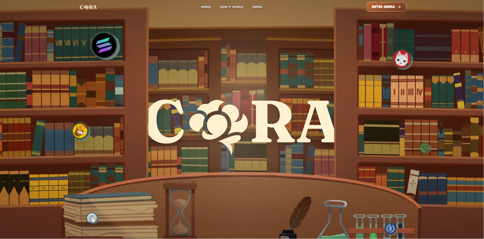
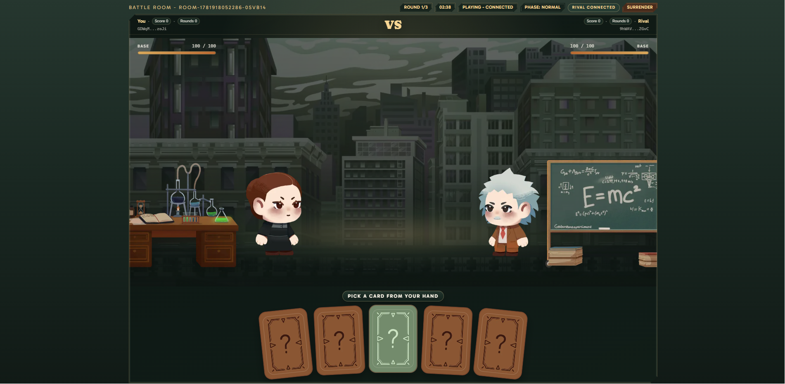
APR 2026 - MAY 2026 // SYSTEMS & ON-CHAIN STATE
Engineered high-throughput matchmaking state machines via Bun/Hono WebSockets paired with server-side oracles executing automated verification payload signatures.
@solana/web3.js that evaluates game payloads and executes deterministic cryptographic payouts.APR 2026 - MAY 2026 // INTELLIGENT PIPELINES
Designed a two-tier modular NestJS micro-agent backend interface. Replaced vulnerable string hacks with a deterministic Math.js AST parser bounded behind versioned Redis state caching infrastructure.
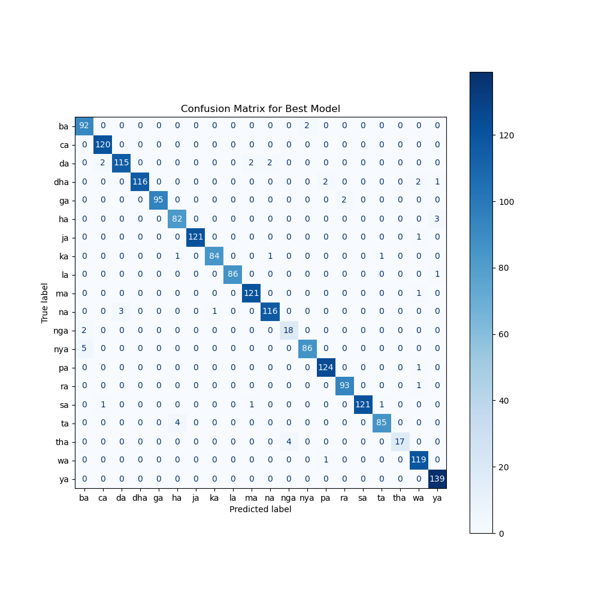
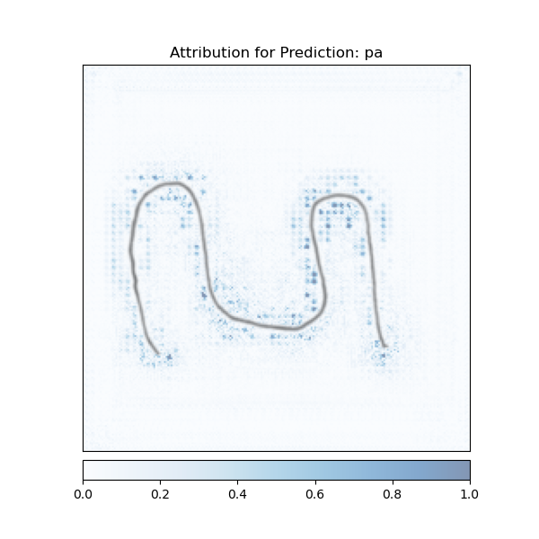
OCT 2025 // DEEP LEARNING COMPUTER VISION
Deployed Co-Scale Conv-Attentional Image Transformers (CoaT) to evaluate script handwritten profiles. Countered severe data imbalance matrices to stabilize an audited 96% F1-score across 20 distinct classes.
JUL 2025 - AUG 2025 // MULTIMODAL TRANSFORMERS
Fused spatial vision pixels with numerical tokens via custom Multimodal Parallel Fusion Transformer models. Structured via Contrastive Learning metrics to maximize class alignment accuracy rules.
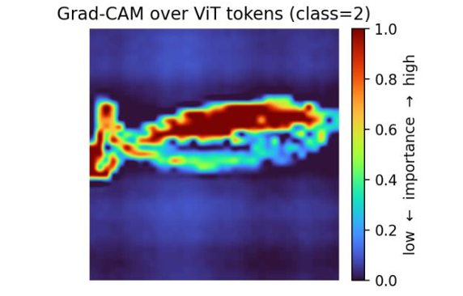
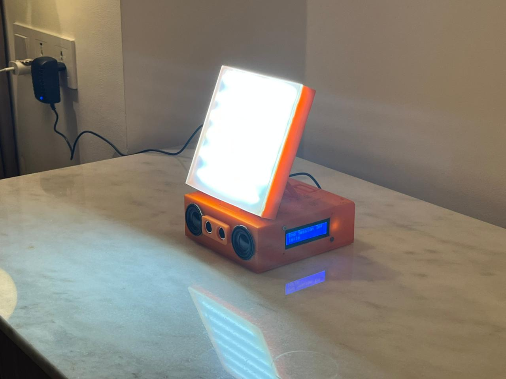
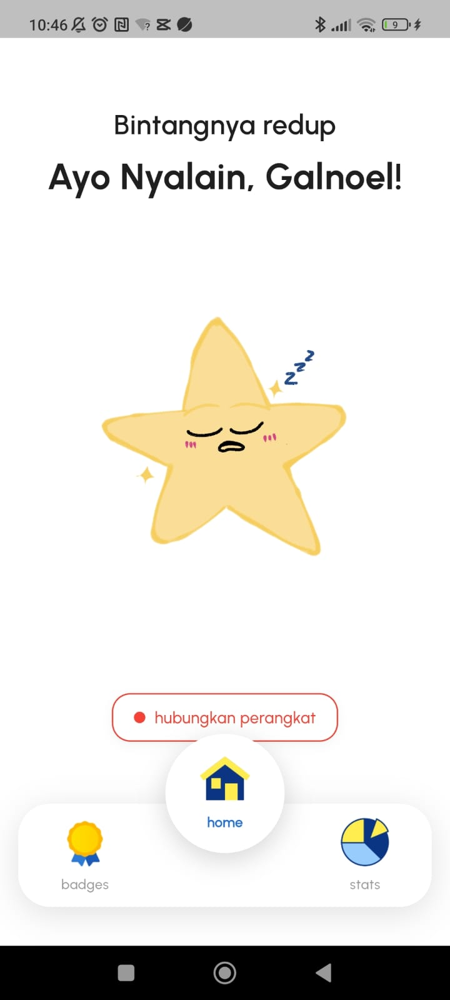
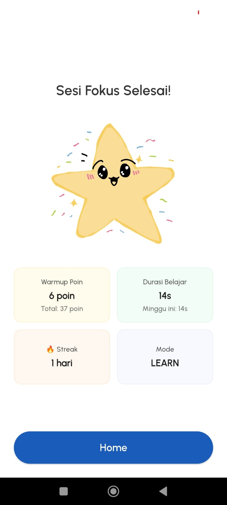
JUL 2025 - NOV 2025 // NATIONAL PIMNAS BRONZE MEDAL
Integrated an ESP32 hardware hub with PWM MOSFET electrical matrices to emit dynamic, adaptive 500-600 lux lighting paths combined with contextual positive behavioral speech generation components.
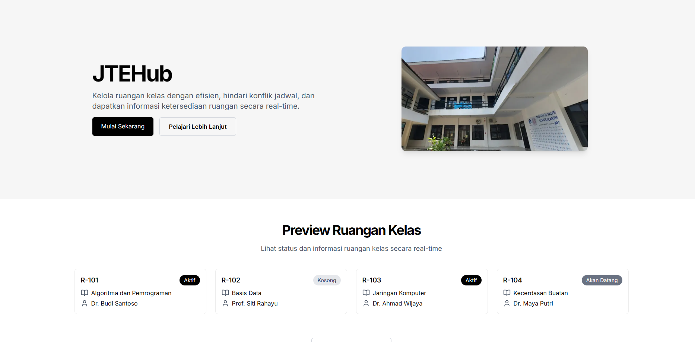
LATE 2024 - EARLY 2025 // BACKEND PLATFORM
Wrote timezone-safe scheduling verification loops in NestJS to invalidate double-booking requests programmatically across relational databases.
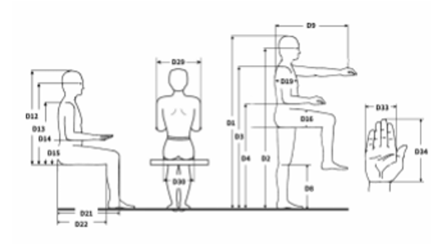
APR 2024 - JUN 2024 // DATA SCIENCE
Applied Association Rule Mining over Indonesian senior-citizen anthropometric datasets to produce spatial configuration criteria for public facility planning.
HISTORICAL CODE BASE // ACADEMIC
Legacy setup displaying web interface foundations, relational database configurations, and fundamental input validations.
PROFESSIONAL EXPERIENCE
Deployed local, zero-leakage RAG infrastructure utilizing Ollama, n8n, and Supabase pgvector inside the bank's local servers.
Managed a 12-person multidisciplinary engineering cohort building a cross-platform client architecture with Gemini AI and serialized gRPC transmission channels through Flask.
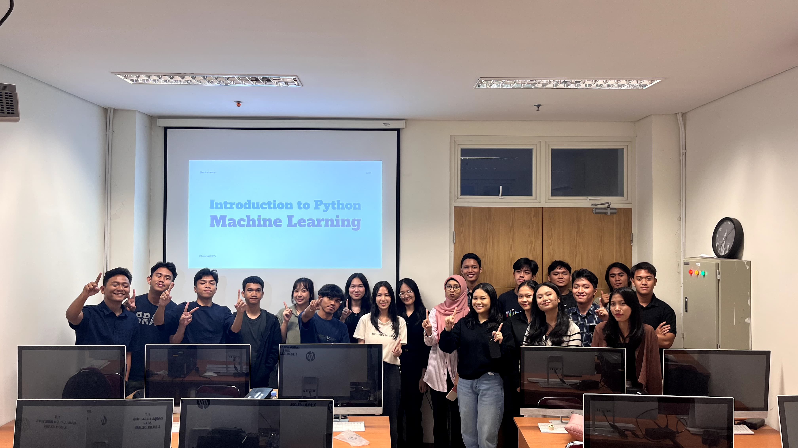
Guided 20+ members through a machine learning foundation syllabus and project-based mentoring track.
HONORS & AWARDS